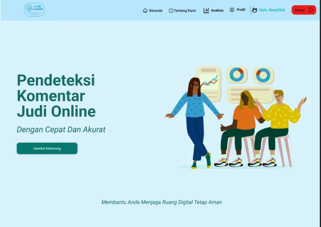
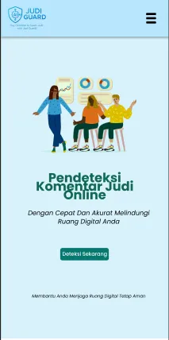
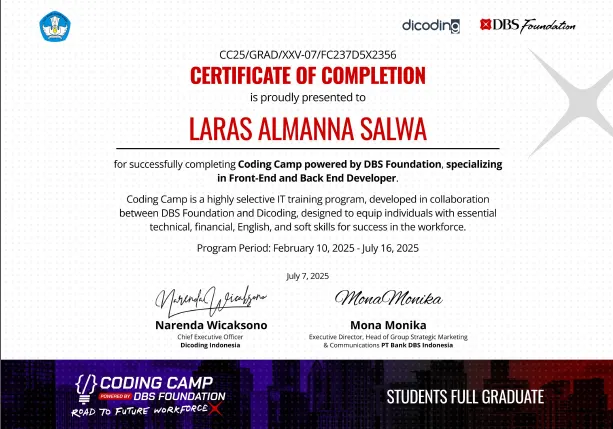

01
UI/UX Designer, Capstone Judi Guard
MSIB – Studi Independen, Coding Camp powered by DBS Foundation
Februari 2025 – Juli 2025Bertanggung jawab atas perancangan UI/UX Judi Guard, aplikasi web yang menyaring komentar judi online di YouTube. Saya merancang alur pengguna, wireframe, hingga desain antarmuka di Figma. Halaman yang saya rancang meliputi Beranda, Tentang Kami, Cara Kerja, dan Mulai Deteksi, dengan tujuan agar proses deteksi komentar mudah dipahami dan digunakan oleh siapa saja.


